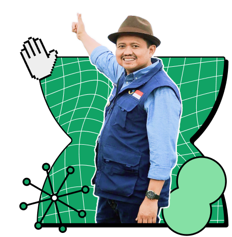

Calon Bupati
Sumedang 2024-2029
Dalam 5 tahun memimpin Sumedang (2018-2023) meraih lebih dari 100 penghargaan tingkat provinsi dan nasional atas pencapaian dalam mewujudkan Good Governance.
Profil
Kenal Lebih Dekat
Biografi
Dony Ahmad Munir, Bupati Sumedang 2018-2023, lahir 5 Desember 1973 di Sumedang, Jawa Barat. Sebelumnya, ia adalah anggota DPR-RI Komisi X 2014-2018 dan politisi senior PPP Jawa Barat.
Riwayat Pekerjaan
- Bupati Sumedang (2018–2023)
- Anggota DPR RI (2014–2018)
- Anggota DPRD Provinsi Jawa Barat (2009–2014)
- Wakil Ketua DPRD Kabupaten Sumedang (2004–2009)
- Anggota DPRD Kabupaten Sumedang (1999–2004)
- Anggota DPRD Kabupaten Sumedang (1997–1999)
Riwayat Pendidikan
- S3 Universitas Padjadjaran (UNPAD) 2020
- S2 Universitas Padjadjaran (UNPAD) 2005
- S1 Sekolah Tinggi Teknologi Garut (STTG) Fakultas Teknik dan Industri 1998
- SMA Negeri 1 Sumedang 1992
- SMP Negeri 1 Sumedang 1989
- SDN Sukaraja 1 Sumedang 1986
Riwayat Organisasi
- Ketua DPP PPP Periode Tahun 2020-2025
- Wakil Sekretaris Jenderal PPP versi Romahurmuziy.
- Ketua DKM Masjid Agung Sumedang 2012–2015
- Ketua DPC PPP Sumedang 2005–2010 dan 2010–2015
- Wakil Ketua Pimpinan Wilayah GP ANSHOR 2009–2012
- Ketua 1 PMII Koorcab 1998–2000
- Pimpinan Pusat IPNU 1996–2003
- Wakil Ketua MPD DPD KNPI Sumedang 1994–2007
- Ketua Umum Senat Mahasiswa Sekolah Tinggi Teknologi Garut (STTG) 1994–1996
Prestasi
Prestasi Selama Menjabat Sebagai Bupati
- Indeks Pembanguan Manusia (IPM) Kab. Sumedang pada 2022 berada di peringkat 11 di Jawa Barat dan menjadi kelima tercepat dalam pertumbuhan IPM.
- Kemiskinan di Sumedang turun pada 2022, sebesar 0,57%, menjadikan kedua terbaik di Jawa Barat.
- Tingkat Pengangguran Terbuka (TPT) Kabupaten Sumedang turun 15,9%, lebih cepat dari rata-rata Jawa Barat.
- Pertumbuhan ekonomi Sumedang pada 2022 mengalami peningkatan sebesar 1,86% atau meningkat 58,68% dari 2021, menunjukkan pemulihan ekonomi pasca-pandemi.
- PDRB Perkapita Sumedang tumbuh 7,25%, dimana pertumbuhannya lebih cepat dari rata-rata Jawa Barat.
Penghargaan
Lebih Dari 100 Penghargaan Didapatkan
- Indeks Pembanguan Manusia (IPM) Kab. Sumedang pada 2022 berada di peringkat 11 di Jawa Barat dan menjadi kelima tercepat dalam pertumbuhan IPM.
- Kemiskinan di Sumedang turun pada 2022, sebesar 0,57%, menjadikan kedua terbaik di Jawa Barat.
- Tingkat Pengangguran Terbuka (TPT) Kabupaten Sumedang turun 15,9%, lebih cepat dari rata-rata Jawa Barat.
- Pertumbuhan ekonomi Sumedang pada 2022 mengalami peningkatan sebesar 1,86% atau meningkat 58,68% dari 2021, menunjukkan pemulihan ekonomi pasca-pandemi.
- PDRB Perkapita Sumedang tumbuh 7,25%, dimana pertumbuhannya lebih cepat dari rata-rata Jawa Barat.
Dukung Pa Dony
Menjadi Bupati
Sumedang 2024-2029

Kuis
Silahkan jawab pertanyaan berikut untuk memenangkan hadiah
*Silahkan untuk daftar menjadi relawan terlebih dahulu!